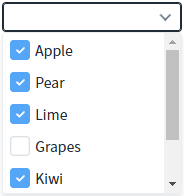
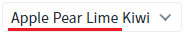
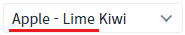
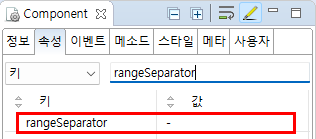

CheckCombobox의 'rangeSeparator' 속성을 사용하여, 연속된 항목을 선택했을 때 표시하는 방법을 설정하는 예제입니다. 이 속성은 연속된 항목이 선택된 경우, 연속된 항목의 첫 번째와 마지막 사이에 구분자를 넣어 표시하는 기능을 제공합니다. 예를 들어 항목이 '01','02','03','04','05'가 있고 사용자가 '01','02','03'을 선택하면, 선택된 값을 '01-03' 형식으로 표시할 수 있습니다.
(기본 설정) 연속으로 선택된 항목의 구분자 미지정
연속으로 선택된 항목의 구분자 지정
예제 영역 '(기본 설정) 연속으로 선택된 항목의 구분자 미설정'에 구성된 CheckCombobox에서 테스트합니다.
1
STEP 1: 목록에서 'Apple', 'Pear', 'Lime', 'Kiwi'를 선택합니다.
Image 1.브라우저(Chrome) 실행 예시 - 항목 선택

2
STEP 2: 선택된 항목의 출력 값을 확인합니다.
선택된 항목이 공백으로 구분되어 표시됩니다.
선택 항목 출력 예시) 'Apple Pear Lime Kiwi'
Image 2.브라우저(Chrome) 실행 예시 - 선택된 항목

예제 영역 '연속으로 선택된 항목의 구분자를 " - "로 설정'에 구성된 CheckCombobox에서 테스트합니다.
1
STEP 1: 목록에서 'Apple', 'Pear', 'Lime', 'Kiwi'를 선택합니다.
Image 3.브라우저(Chrome) 실행 예시 - 항목 선택
2
STEP 2: 선택된 항목의 출력 값을 확인합니다.
선택된 항목 중 연속된 항목이 범위 구분자로 설정된 ' - '으로 표시합니다.
연속으로 선택된 항목) Apple, Pear, Lime
선택 항목 출력 예시) 'Apple - Lime Kiwi'
Image 4.브라우저(Chrome) 실행 예시 - 선택된 항목

컴포넌트의 속성을 정의합니다.
[필수] rangeSeparator="구분자"
연속적으로 선택된 값의 구분자를 설정합니다.
(예시) rangeSeparator=" - "
Image 5.웹스퀘어 스튜디오의 Component View - 속성 설정 예시

Example 1.Source
<!-- CheckCombobox의 소스 본문 예시 --> <xf:checkcombobox rangeSeparator=" - "> <!-- 중략 --> </xf:checkcombobox>
rangeSeparator